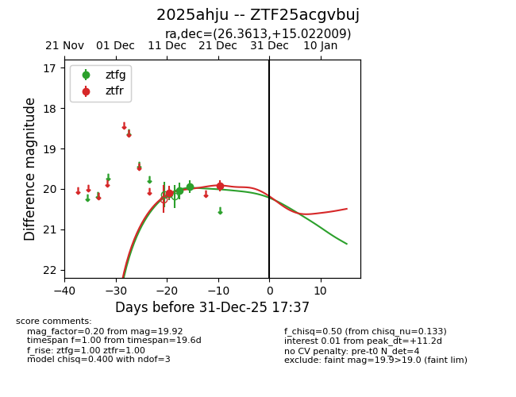
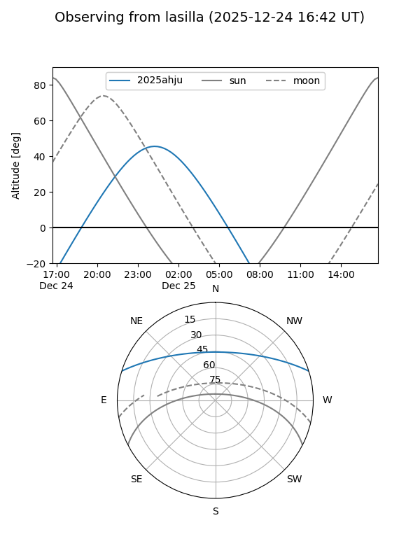
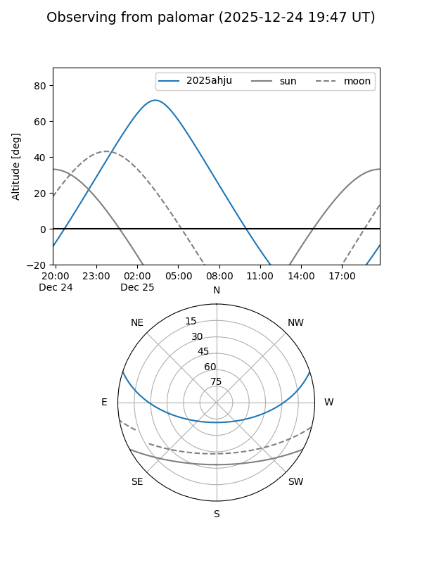
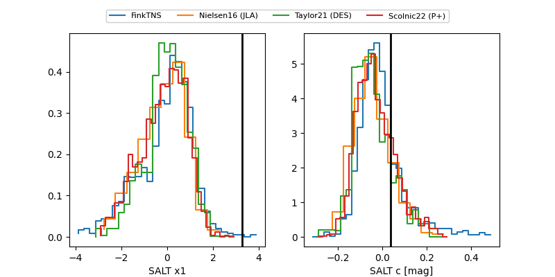

2025ahju
Target 2025ahju at 2025-12-22 15:21
Aliases and brokers:
FINK: fink-portal.org/ZTF25acgvbuj
Lasair: lasair-ztf.lsst.ac.uk/objects/ZTF25acgvbuj
ALeRCE: alerce.online/object/ZTF25acgvbuj
TNS: wis-tns.org/object/2025ahju
YSE: ziggy.ucolick.org/yse/transient_detail/2025ahju
alt names
ZTF25acgvbuj (ztf,fink_ztf)
2025ahju (tns,yse)
Coordinates:
equatorial (ra, dec) = 26.3613,+15.02201
equatorial (HMS+DMS) = 01:45:26.71,+15:01:19.23
galactic (l, b) = (141.8244,-45.85924)
Flags:
Photometry:
last ztfg=19.94, ztfr=19.92
3 ztfg, 2 ztfr detections
Lightcurve

Visibility


Additional plots
